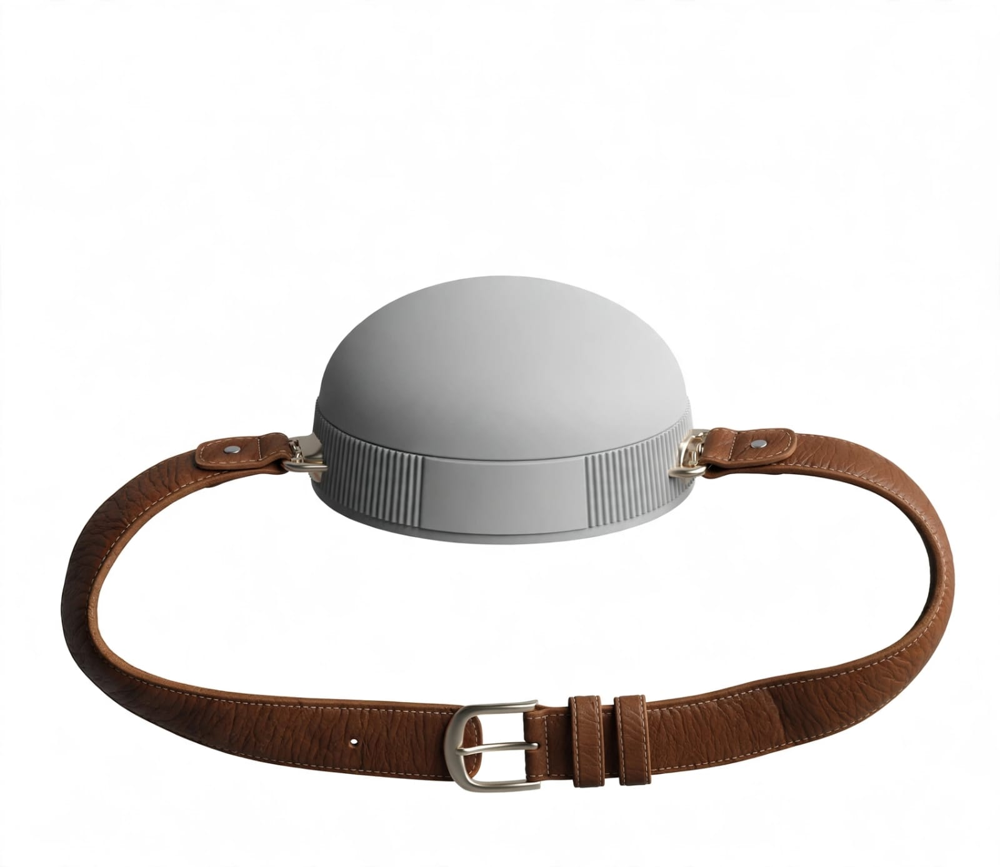

Arrastra a la derecha para mirar · Palanca izquierda para caminar
🚨
¡Posible caída detectada!
El cinturón detectó un impacto seguido de inmovilidad. ¿Te encuentras bien?
12
🏠 Equilibrio Seguro
Juego mixed reality con cinturón inteligente: camina por la casa, el cinturón vigila tus movimientos y te alerta ante movimientos bruscos, caídas o marcha errática.

PC: WASD/flechas + ratón · Shift correr · T tropiezo · C probar caída. Móvil: palanca + arrastrar para mirar.
❓ Cómo jugar
🎯 Ruta guiada: sigue la flecha y visita los 6 puntos de la casa en orden.
🛋️ La casa tiene sala, cocina, habitaciones, baño, muebles, 2 personas y mascotas (🐶 Max y 🐈 Mishi). ¡No los atropelles!
🟤 Cinturón Guardián: mide tu velocidad, estabilidad y forma de caminar.
⚠️ Movimiento brusco: frenar o girar de golpe baja tu estabilidad.
🌀 Marcha errática: caminar en zigzag rápido activa la alerta (pruébalo a propósito).
🧸 Peligros: juguetes, suelo mojado y la mascota que se cruza. Si vas rápido, tropiezas; si tu estabilidad está baja, puedes caer.
🚨 Caída: confirma “Estoy bien” antes de que termine la cuenta atrás o se avisará al cuidador.
🥽 AR/VR: necesitas un navegador con WebXR (Chrome/Edge en Android o visor Meta Quest) y conexión HTTPS. En AR la casa se ve como holograma sobre tu espacio real.
📱 En móvil, activa los sensores para que el cinturón use el acelerómetro real.